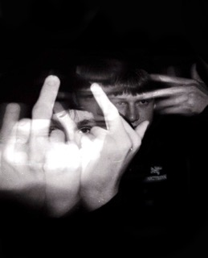
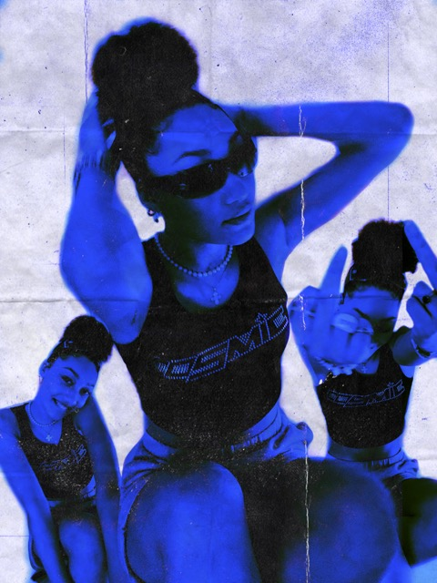
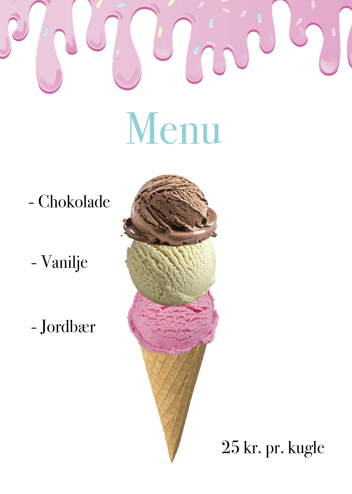

Hvem er jeg?
Mit navn er Ophélie og jeg er 20 år gammel. Jeg studerer multimediadesign på EK hvor jeg snart skal til at afslutte første semester. Jeg startede på multimediedesign, fordi jeg altid har haft en kreativ side. Under coronaperioden begyndte jeg at arbejde med Adobe Photoshop, hvor jeg især lavede digitale plakater og billedredigering. Her fandt jeg min interesse for digitalt design.
Uddannelses-og erhvervserfaring
Gennem tiden har jeg haft flere forskellige jobs, jeg startede med at arbjede i en pandekagevogn da jeg var 13 år. Jeg syntes det var fedt at tjene mine egne penge og fik derfor et job mere som rengøringassistent i et fitnesscenter.
Efter folkeskolen startede jeg direkte på STX, hvor min studieretning var biologi og kemi, som i den grad adskiller sig fra det jeg laver nu. Men siden jeg altid har haft en kæmpe interesse for kreativitet, har jeg altid vidst at jeg ville arbejde med min kreative side og udtrykke mig visuelt.
Efter gymnasiet holdte jeg to sabbatår, som jeg dedikerede til at arbejde med børn, som både pædagogmedhjælper på fuldtid og barnepige for en familie med 3 plejebørn, hver anden weekend. I denne periode lærte jeg rigtig meget om mine egne kompetencer.....
Da jeg på gymnasiet startede med at arbejde i Photoshop, har jeg lige siden arbejdet med meget forskellige projekter, eksempelvis som design af EP-cover, plakater og visuelle materialer til børnehaven jeg arbejde i. Desuden har jeg også lavet mange digitale posters til insagramopslag og personlige projekter. Alt dette har været meget afgørende for at starte multimediadesign på EK.
Nedenunder kan du se nogle eksempler på projekter jeg har lavet.
EP-cover
Digital poster
Is menu
  Det jeg har lært
På første semester har jeg især lært at arbejde struktureret med diverse processer når det gælder deign og kodning. Jeg har arbejdet med grundlæggende designprincipper såsom typografi, farver, kontraster og gestalt love. Derved har jeg lært at træffe bevidste valg når det gælder UX/UI-design.
Vi har brugt forskellige digitale værktøjer gennem semesteret og har primært arbejdet med Figma og diverse Adobe programmer. Derfra har jeg udviklet mine tekniske færdigheder - alt fra vektorgrafik i Illustrator til videoproduktion/videoredigering i Premier Pro, billedredigering i Photoshop og idéudvikling i Figma.
På første semester har jeg også opnået en større forståelse for vigtigheden af feedback, så jeg kan forberede og forfine mit arbejde. Og generelt gøre arbejdsprocsessen nemmere for mig selv. Samlet set har jeg både udviklet mine kreative kompetencer og styrket evnen til at planlægge og arbejde målrettet med faget.